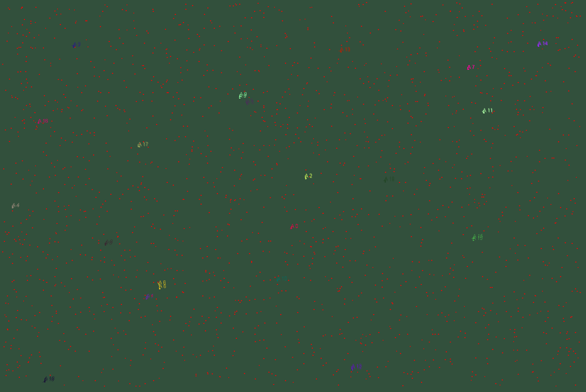
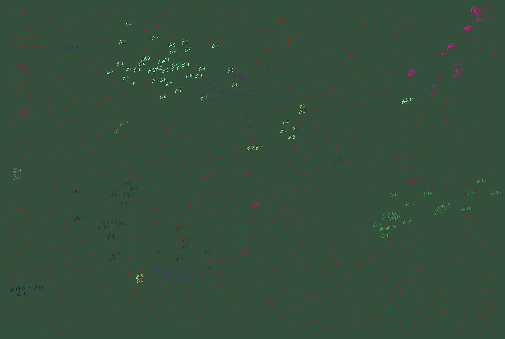
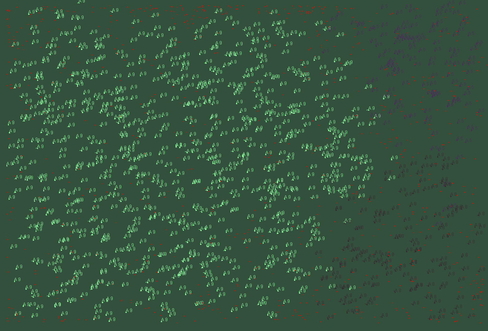

Projektname: Albert
Projektbeschreibung:
"Albert" ist ein innovatives KI-Projekt, das die Dynamik des Überlebens und der Evolution von 100 Kreaturen, die als "Alberts" bekannt sind, in einer simulierten Umgebung untersucht. Das Hauptziel dieser Kreaturen ist es, in ihrer Umgebung so viel Nahrung wie möglich zu finden, um ihre Lebensdauer zu erhöhen und sich fortzupflanzen. Durch den Mechanismus der natürlichen Selektion sollen die leistungsfähigsten Alberts, die am besten an die Gegebenheiten ihrer Umgebung angepasst sind, überleben.
Simulationseinstellungen
Nahrungsverfügbarkeit: Zu Beginn der Simulation ist die Nahrungsverfügbarkeit hoch, was den Alberts ermöglicht, schnell zu wachsen und sich zu vermehren. In dieser Phase sind die Bedingungen für das Überleben günstig, und viele Alberts entstehen. Im Verlauf der Simulation wird jedoch die Rate der Nahrungsproduktion drastisch reduziert. Dies führt zu einer ständigen Herausforderung für die Kreaturen, da die ursprünglich hohe Nahrungsverfügbarkeit allmählich abnimmt und neue Nahrung kaum noch generiert wird.
Überlebensdruck: Mit dem Rückgang der Nahrung stehen die Alberts vor einer kritischen Herausforderung: Sie müssen sich anpassen, um ihre Überlebenschancen zu maximieren. Während die Nahrung langsam verschwindet, wird der Wettbewerb um die verbleibenden Ressourcen intensiver. Schwächere oder weniger effiziente Alberts beginnen zu sterben, während diejenigen, die besser darin sind, Nahrung zu finden, überleben und sich fortpflanzen.
Fähigkeiten der Alberts
Sichtfeld: Jeder Albert hat die Fähigkeit, bis zu 1 Meter geradeaus zu sehen. Dies ermöglicht ihm, seine Umgebung zu scannen und Nahrung zu erkennen, bevor er sich auf den Weg macht. Die Fähigkeit, die Richtung zu ändern und sich zu drehen, ist entscheidend, um in einer dynamischen Umgebung navigieren zu können.
Bewegung: Die Alberts können sich aktiv bewegen, indem sie nach vorne gehen. Diese Bewegung ermöglicht es ihnen, sich durch die simulierte Welt zu bewegen, auf Nahrung zuzugreifen und Hindernisse zu umgehen. Durch strategische Entscheidungen in Bezug auf ihre Bewegung können sie ihre Überlebenschancen erhöhen.
Evolutionsmechanismus
Ein einzigartiges Merkmal der Alberts ist der Evolutionsmechanismus, der beim Duplizieren zum Tragen kommt. Wenn ein Albert erfolgreich Nahrung findet und seine Lebensdauer verlängert, hat er die Möglichkeit, sich zu duplizieren. Bei diesem Prozess wird das Gehirn des ursprünglichen Alberts an das neue Individuum weitergegeben.
Neuronale Anpassung: Jedoch werden bei der Duplizierung die neuronalen Verbindungen im Gehirn des neuen Alberts minimal angepasst. Diese Anpassungen können als Mutationen betrachtet werden, die es den Nachkommen ermöglichen, von den Erfahrungen ihrer Vorgänger zu lernen und sich an die verändernde Umgebung anzupassen. Dieser evolutionäre Prozess fördert die Entstehung von Kreaturen, die besser in der Lage sind, in der simulierten Welt zu überleben.
Ergebnis der Simulation
Am Ende der Simulation wird der Albert, der am besten in der Lage ist, Nahrung zu finden und sich an die veränderten Bedingungen anzupassen, als der erfolgreichste Vertreter seiner Art hervorgehen. Der Prozess des Überlebens und der Anpassung wird durch natürliche Selektion gesteuert, wobei die weniger erfolgreichen Alberts nach und nach aus der Population verschwinden. Die stärkeren, fähigeren Alberts werden hingegen überleben und sich weiter vermehren.
Fazit
Das Projekt "Albert" ist nicht nur eine Untersuchung der KI und der evolutionären Biologie, sondern auch eine spannende Erkundung des Verhaltens und der Anpassungsmechanismen lebender Organismen in einem dynamischen und sich ständig verändernden Umfeld. Durch die Kombination von Sicht, Bewegung und evolutionären Prinzipien wird das Überleben der Alberts zu einem faszinierenden Experiment, das zeigt, wie Kreaturen im Laufe der Zeit lernen, sich an ihre Umgebung anzupassen.
Beginn der Simulation (Viel Nahrung)

Albert Boom (Viele Alberts)

Zivilisationen (Nur noch die guten Gruppen an Alberts leben)
Kampf der Großmächte (Nur noch die besten ALberts leben und breiten sich weit aus)
